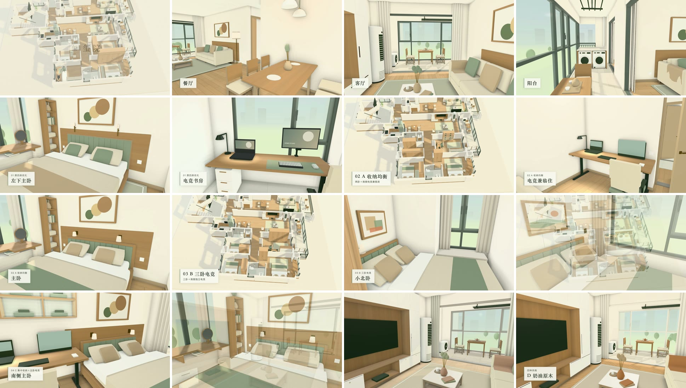

代码粗建模、大模型精修、Blender烘光照、Remotion出视频
先用Three.js写代码，按图纸尺寸搭出墙、门窗和家具的大形。再让大模型一轮一轮补细节。然后导进Blender，只把光照烘成贴图贴回网页，颜色仍由网页里的材质给。最后用Remotion在网页里按导览镜头一帧一帧截图，拼成漫游视频。
数值和代码 粗建模 写代码（Three.js），按图纸尺寸搭墙、门窗洞和家具的大形，交出能在网页里走的毛坯场景
精修 交给大模型，一轮补一类细节，每轮跑检查再并入，还是同一份代码
烘光照 导进Blender，墙、地、顶只烘光照不烘颜色，每套布置、每套灯光一份贴图，风格只换颜色
出视频 用Remotion在网页里按导览镜头逐帧截图，出横版主片和竖版，无声
# Blender（Cycles）里只烘光照，烘焙类型选漫射，只勾直接光和间接光，不勾颜色
scene.cycles.bake_type = "DIFFUSE"
scene.render.bake.use_pass_direct = True
scene.render.bake.use_pass_indirect = True
scene.render.bake.use_pass_color = False
// 网页里（three r180）把烘好的图挂在lightMap上，读第二套UV
material.lightMap = bakedLight;
material.lightMap.channel = 1; // 默认是0，第一套UV
// 着色器把光照贴图加进间接漫射，再乘材质颜色，所以换风格只换颜色，光照贴图不用动
玺院
烘了什么 屋主这户的墙、地、顶，4套布置×3套灯光（日间、柔光、暖阳）共12套，风格用自己那套灯光
贴图 每套拆成两张WebP，亮度无损约0.45MB，光的颜色半尺寸约30KB，图集2048²，每米64格
每套布置三套灯光合计1.37到1.43MB，进屋只下载当前那一对，约0.47MB
各档 显卡和手机档还是标准材质，只把漫反射换成贴图里的光
软件渲染档换成基础材质，只算颜色乘贴图，不走光照
什么时候 漫游和导览进屋那几段，沙盘和平面俯视没有屋顶，照旧实时光
关掉烘焙 网址后面加?bake=0，看实时光，用来对比，控制台里xiyuanBake(false)也行
烘焙命令 npm run bake，M5 Pro上约30到35分钟，试烘 npm run bake -- --samples=256，约10分钟
检查 npm run check:bake，家具变了没重烘就红，墙地顶变了没重烘页面自己回到实时光
出视频 第一次 npm ci --prefix video，以后在玺院根目录 npm run video
镜头 写在video/src/shots.js，截帧钩子只有网址带?capture=1才加载，平常打开页面不下载它
等贴图 室内镜头开拍前一直渲染到xiyuanBake()报告这一张贴图已在用，最多等5秒，等不到就停
成片 主片1920×1080、118.6秒，竖版1080×1920、49秒，30帧，都没有音轨
网页版 两个文件各约18MB（压在20MB以内），放在old的ysevan/tools/xiyuan-video/用在哪 玺院，2026-10-26起。粗建模是Codex写的，墙线从CAD图纸里读出来（@mlightcad/libredwg-web），家具按尺寸摆成方块。精修是2026-10-21到10-24的四轮场景细节，由Claude做，一轮一类。第1轮是画质分档和按真实尺寸的贴图坐标，第2轮是屋顶投影、接触阴影、踢脚线、门窗五金、开关插座和窗帘，第3轮是软装和厨卫，第4轮是法线贴图、环境遮蔽和房间灯（这三样只给有显卡的机器）。每轮新加检查，先在旧版上红一次再并入。
烘光照是控制室10-26到10-27做的，在装修精修之后的场景上烘。烘的是屋主这户的墙、地、顶，4套布置各按3套灯光烘一份，共12套，四种风格各用自己那套灯光（A和D日间，B柔光，C暖阳），换风格就换贴图。家具本身不烘，还是实时光，但烘的时候它们挡光、反光，所以地上、墙上的家具影子是这套布置自己的。只在漫游和导览进屋那几段用，沙盘和平面俯视没有屋顶，烘的光不对，照旧用实时光。
出视频是控制室10-26做的，用网页本身的三维场景逐帧出片，不另建模型。无头Chrome打开玺院，按镜头表一帧一帧摆相机、从画布取图，Remotion合成字幕、片头片尾和淡入淡出，再编码成主片和竖版。字幕只用网页上已有的布置名、风格名和房间名。成片在玺院漫游视频 。收藏里的remotion-best-practices 是Remotion官方给AI的写法手册，出视频那一步照它写。

玺院主片的抽帧小样，16格，按时间从左上到右下 为什么 实时光算不出柔和的间接光，墙角不会暗，家具底下也没有柔影。玺院原来靠实时画的假环境遮蔽和接触阴影来补，真的环境遮蔽只给有显卡的机器。烘焙是在Blender里把这些慢慢算好存成贴图，网页里每帧只多读一张图，没显卡的机器也看得到。玺院拿同一段镜头开关烘焙各出一版比，有2.5%到7%的像素亮度差超过8级，集中在墙角、顶面和窗边，正是实时光缺的那几处。
只烘光照不烘颜色，是因为网页里的颜色是材质颜色乘光照现算的。贴图里只有光，换风格只换材质，自定义颜色和亮度滑块也照常起作用。颜色也烘进去，贴图里就带死了一种风格，换风格、改颜色都得重烘，四种风格乘四套布置就是十六份。玺院只烘光照，按灯光分是十二份，A和D都用日间那套。光照比木纹、砖缝平缓得多，贴图用小尺寸就够，玺院每米64格，约1.6厘米一格。
代价 贴图要下载。玺院每套布置三套灯光合计1.37到1.43MB，第一次进屋多下载约503KB（模块加当前那一对贴图），离线单文件从2.9MB变成10.5MB，显存每档多约20MB。没显卡的台式机反而快了，软件渲染每帧快12%到25%（客厅154毫秒降到115毫秒），因为墙地顶换成了不走光照的基础材质。笔记本显卡档每帧多2%到3%，仍是60帧。亮度按屋主定的「加阴影后保持现在的明亮度，只加层次」标定，78组机位开关烘焙比平均亮度，在低1.5%到高4.7%之间，超过3%的都是手机竖屏。
布置一改就要重烘那一套，不重烘的话旧影子留在原地，新家具下面没有影子（示意里关掉两套布置各烘一份那个开关，再切到布置二，就是这样）。玺院家具、门窗一改就要重跑，整趟30多分钟。光也是烘死的，玺院四种风格各带一套灯光，所以按灯光各烘一份，贴图多了两倍，同一机位四种风格开关烘焙前后亮度差不超过0.9%，各自的氛围还在。家具本身、邻居户、公共区和门扇都没烘。
视频是从网页截的，布置、风格或镜头一改就要重出。玺院整趟在M5 Pro上空闲时11到13分钟（10-27早上那趟10.8分钟），机器忙时21分钟多。中间帧截图约1.46GB，合成出来的帧约1.42GB，出完自动删。母版主片约108MB、竖版约48MB，网页版每个文件压在20MB以内（old上单个文件不能超过25MiB），主片18.2MB，木纹比母版略软。
全部都用上
屋主，2026-10-26（控制室记录，看完仪绘士BY的视频以后说的） 坑 光照贴图要单独展一套不重叠的UV。贴材质用的那套为了让木纹、地砖按真实尺寸平铺，同一块贴图被很多面重复用，拿它来烘，几个面的光会叠在一起。three的光照贴图默认读第一套UV（channel是0），要改成1才读第二套。
烘的时候还有几件要先想到。反光按灰度算，按某一种风格的颜色反弹，木色会被烘进光里，换了别的风格也带着（玺院试过，整屋发粉）。和墙面齐平的门头这类重合面，在Cycles里会互相挡成黑点，玺院让被烘的面本身不挡光，另放一份后退3毫米的替身去挡光和反光。太阳、反弹、天空和补光分三份烘再加起来，不要拿总光减太阳，相减会把噪点减成负值。光照贴图别整张存有损WebP，没显卡台式机的白墙上出过粉绿色斑和8像素方块，玺院改成亮度单独存无损，光的颜色另存半尺寸。
出视频时镜头要按帧号走，每一帧等画完再截。网页里自己按时间动的东西（灯呼吸、自转）在逐帧截图时会一跳一跳的，Remotion的写法手册明确不许这样写。玺院的截帧钩子一加载就停掉页面自己的动画循环，截下来的画面里也不带任何界面。
机器很忙时，Remotion的截图偶尔变成横条重复的花屏，玺院10-27凌晨那一趟主片有53帧。现在每一帧缩成小灰度图和相邻帧比，突然跳开又跳回来的就是坏帧，重画，最多三次。镜头的每一帧也用页面自己的行走碰撞核对，以后改了布置，哪个镜头撞进家具会报出是哪一段、哪一帧。
页面里按需加载的东西，截帧前要等它真用上。烘焙贴图是进屋才下载的，玺院每段室内镜头开拍前一直渲染，直到页面的xiyuanBake()报告当前布置和灯光的贴图已在用，最多等5秒，等不到或贴图和场景对不上就停下报错，拍完再确认一次没掉。每段用的是哪张贴图记在report.json里。
出处：抖音「仪绘士BY」的视频「我建了座圣彼得大教堂，Blender、Remotion」（屋主2026-10-26转给控制室）；tools/xiyuan-walkthrough/README.md:43「Blender 光照烘焙」、:46「烘了什么」、:47「只烘光，不烘颜色」、:48「什么时候用」、:49「各档怎么画」、:50「亮度」（「加阴影后保持现在的明亮度，只加层次」）、:51「贴图格式」、:52「开关」、:53「重烘」、:54「离线版」、:56「贴图大小」、:57「实测」、:60「没做、留给以后」；tools/xiyuan-walkthrough/dist/bake-layer.js:17「MeshBasicMaterial」、:21「uv1」；tools/xiyuan-walkthrough/package.json「bake」「check:bake」；玺院烘焙提交b0be5d2到d3e5baa（034a389「替身」「灰度反照率」「不相减」，7c71c0d「亮度无损＋颜色半尺寸」），协作说明c351414，old fa6bace；显存每档多约20MB、整屋发粉两处是控制室烘焙验收记录；两张烘焙对照图是控制室验收时出的，逐字节拷来；tools/xiyuan-walkthrough/scripts/read-dwg.mjs:5「libredwg-web」；tools/xiyuan-walkthrough/dist/design-presets.js:16「export const LIGHTING」、:19「export const PRESETS」；tools/xiyuan-walkthrough/dist/design-studio.js:20「homeBrightness」；玺院提交96b6e75（首次入库）、1415ff7、c13440f（场景细节第1轮）、6c880ba、14da7b9（第2轮）、468f761（第3轮）、48821ed、449345a、f586fe7（第4轮）；tools/xiyuan-walkthrough/dist/vendor/three.core.js:6959「this.channel = 0」；tools/xiyuan-walkthrough/dist/vendor/three.module.js:404「irradiance += lightMapIrradiance」；Blender 5.2手册「Render Baking」（「Diffuse」「Color」）；tools/travel/.agents/skills/remotion-best-practices/remotion-markup/3d.md:46「No animations not driven by」；tools/xiyuan-walkthrough/README.md:169「Remotion 漫游视频」、:173「一条命令」、:174「产物」、:175「内容」、:176「截帧钩子」、:177「镜头不穿墙」、:178「坏帧自动重画」、:179「和光照烘焙的关系」、:180「用时和占用」、:182「按最终场景重出」；tools/xiyuan-walkthrough/video/src/shots.js:1「Shot lists」；tools/xiyuan-walkthrough/协作说明.md:199「漫游视频」、:212「Blender 光照烘焙」；玺院视频提交3bfa873、ae2d3e5、564a443、79097b3，按最终场景重出c283f5c，协作说明4b41fd5，old 559cd6c、4498e9b；抽帧小样是控制室视频检查时出的，逐字节拷来